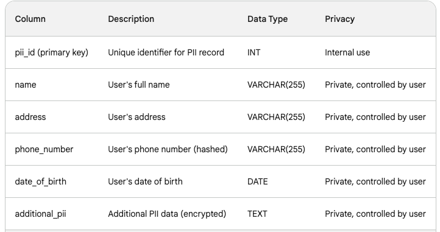
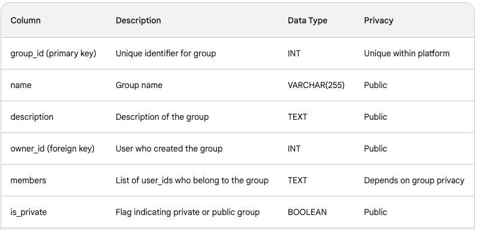
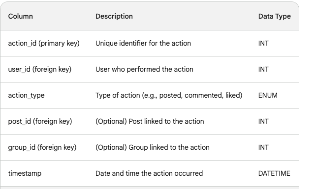

Summary: Building a social network like Meta, a behemoth in the online world, is no small feat. This article offers a glimpse into the architectural foundations of such a platform, with a focus on leveraging the power of HDFS for data storage. We'll explore key functionalities like user management, post sharing, media handling, and multi-platform accessibility, acknowledging that this is just a humble attempt to demystify the intricate workings of such a complex system. Your journey towards building your own social haven begins here, with insights and considerations to guide your exploration.
Here's a high-level overview of the steps and design considerations for hosting the data on HDFS and implementing the functionalities:
Data Storage on HDFS:
Data Model: Define your data model considering the entities (users, posts, friends, groups, etc.) and their relationships. Choose a schema like Avro or Parquet for efficient storage and retrieval.
Data Partitioning: Partition data by date, user ID, or other relevant criteria for efficient querying and load balancing.
Replication: Configure replication factor based on your desired data redundancy and availability needs.
Compression: Compress data to optimize storage space and network bandwidth.
System Design:
Microservices Architecture: Break down the system into smaller, independent services (e.g., user management, post management, friend management) for scalability and maintainability.
API Gateway: Implement an API gateway for managing and routing API requests to different microservices.
Databases: Consider using relational databases (e.g., MySQL) for storing structured data like user profiles and friend connections, and NoSQL databases (e.g., Cassandra, MongoDB) for handling unstructured data like posts and comments.
Caching: Implement caching layers to improve performance and reduce HDFS access for frequently accessed data.
Message Queues: Use message queues (e.g., Kafka) for asynchronous communication between microservices and real-time updates.
Functionalities:
User Management: Store user profiles, authentication, and authorization logic in a secure database.
Friend Management: Implement friend connections using a graph database or dedicated "friends" table in your relational database.
Post Management: Store posts, comments, likes, shares, and other post-related data in HDFS or appropriate databases.
Media Management: Store photos and videos in HDFS with metadata in a database. Use a separate service for video processing and transcoding.
Group Management: Create and manage groups, group membership, and group discussions using dedicated database tables or graph structures.
Group Chat: Implement real-time chat using WebSockets or other low-latency protocols. Consider using a dedicated chat server like PubNub or Pusher.
Advertising: Design separate services for managing advertisements, targeting, and billing. Leverage HDFS for storing ad creatives and data for analysis.
Multi-Platform Support: Develop separate client applications for iOS, Android, and Web using platform-specific SDKs and APIs. Implement responsive design for web access.
Additional Considerations:
Security: Implement robust security measures to protect user data, prevent unauthorized access, and comply with data privacy regulations.
Scalability: Design your system to handle increasing user base and data volume. Consider using auto-scaling technologies and horizontal scaling of microservices.
Performance: Optimize your system for fast response times and efficient data retrieval from HDFS. Implement caching and load balancing strategies.
Monitoring and Logging: Monitor system performance, resource usage, and errors for proactive maintenance and troubleshooting.
Tools and Technologies:
Programming Languages: Python, Java, Node.js, etc.
Data Processing: Spark, Hadoop MapReduce
Databases: MySQL, Cassandra, MongoDB
API Gateway: Kong, Tyk
Message Queues: Kafka, RabbitMQ
Real-time Chat: WebSockets, PubNub, Pusher
Cloud Platforms: AWS, Azure, GCP (optional for hosting and scalability)
Basic Data Model:
This basic model is just an attempt to give an idea what is bare minimum needed to explain the concept.
1. Users:
 users table
users tablethere are other columns like last_login_dt and so on..
2. PII User ID:
Table to Store Anonymous User InformationAgain, additional columns like employer information, city lived, visited and so on.
3. Posts
 Table related to posts
Table related to posts4. Groups
Table related to groups5. Messages:
 Table related to messages
Table related to messages6. Advertisements:
 Table related to ads
Table related to ads7. User Behavior Pattern:
user actions table8. Transactions

and so on...
Scalability: At a very basic level for understanding
Implementation Details for Scalability and Performance:
1. Database Sharding and Replication:
Sharding Approach: Shard table by user ID hash range to distribute user data evenly across multiple database servers. Shard table by a hash of the user ID to keep user posts co-located for faster read operations.Consider sharding other tables (e.g., Ads, Media) based on access patterns and data size.
Replication: Use synchronous replication for critical data like Users and Posts to ensure immediate consistency across servers. Use asynchronous replication for less critical data like Likes and Comments, allowing for eventual consistency and better scalability.
2. Caching Mechanisms:
Implement in-memory caches on application servers to store frequently accessed data like user profiles, popular posts, and friend lists.
Use a distributed distributed cache, like Redis, to share cached data across application servers for better performance and reduced database load.
Employ cache invalidation techniques to ensure cached data remains consistent with the database.
3. Messaging Queue System:
Utilize a platform like RabbitMQ or Kafka to handle real-time notifications and updates.
Publish messages for events like likes, shares, comments, and friend requests to the queue.
Background worker processes subscribe to the queue and asynchronously update user interfaces, send push notifications, etc.
4. Load Balancers:
Use a load balancer like HAProxy or Nginx to distribute incoming traffic across multiple application servers for improved scalability and availability.
Configure health checks to identify and remove unhealthy servers from the pool.
Utilize load balancing algorithms to optimize traffic distribution based on server load and performance.
5. NoSQL Databases:
Consider using NoSQL databases like MongoDB or Cassandra for storing large media files (images, videos).
NoSQL databases offer horizontal scalability and flexible data models, making them ideal for managing unstructured data like media files.
Integrate the NoSQL database with your relational database system for seamless data access and management.
Analytics 101
Growth Accounting Metrics:
MAU (Monthly Active Users): Number of users who log in at least once in a month.
WAU (Weekly Active Users): Number of users who log in at least once in a week.
DAU (Daily Active Users): Number of users who log in at least once in a day.
Cohort Analysis: Analyze user behavior based on signup date to understand retention and engagement.
Retention: Measure the percentage of users who stay active over time.
User behavior pattern: Track user actions to understand how they interact with the platform.
Revenue growth: Track revenue generated from advertising and other sources.
User growth: Track the number of new users signing up.
Visualization and Dashboards:
Customer Journey Analytics: Visualize the user journey from signup to engagement.
Customer Segmentation: Segment users based on demographics, interests, and behavior.
User Engagement Analysis: Track user activity and engagement metrics.
Content Performance: Analyze the performance of posts and other content.
Friend Network Analysis: Visualize the relationships between users.
Ad Campaign Effectiveness: Track the performance of advertising campaigns.
Trend Analysis: Identify trends in user behavior and content.
SQLs for Growth Metrics:
1. Monthly Active Users (MAU):
2. Weekly Active Users (WAU):
3. Daily Active Users (DAU):
4. Cohort Analysis:
5. Retention:
6. User Activity Summary:
This query identifies the top users for each action type (posting, commenting, liking).
7. Most Engaged Users by Action Type:
This query shows the distribution of user actions across different days.
Revenue Tracking:
Revenue Growth Rate:
User Growth:
Customer and User Segmentation (L1, L7, etc.)
Segmenting your users can be incredibly valuable for understanding their behavior, tailoring experiences, and driving growth. Here's how you can implement customer and user segmentation in your social network, with specific examples for L1, L7, and beyond:
Segmentation Levels:
L1: Basic demographics (age, gender, location)
L2: Behavioral data (activity level, post frequency, content preferences)
L3: Engagement metrics (DAU, WAU, MAU, time spent on platform)
L4: Monetization potential (spending habits, ad interactions)
L5: Social connections (friend groups, influencers)
L6: Content performance (post views, shares, likes)
L7: Sentiment analysis (positive, negative, neutral)
L8: Churn risk prediction (likelihood of leaving the platform)
Examples:
L1: Segment users by age group to target specific content and advertising. For example, showing university-related ads to users in the 18-24 age group.
L2: Segment users by posting frequency to identify highly active users and engage them with exclusive content or communities.
L3: Segment users by DAU to identify your core audience and tailor content delivery based on their peak activity times.
L4: Segment users by spending habits to identify potential high-value users and offer them personalized incentives.
L5: Segment users by friend groups to understand community dynamics and influence diffusion patterns.
L6: Segment posts by performance metrics to identify trending content and promote similar topics.
L7: Analyze user sentiment on specific topics to understand their overall mood and adjust content accordingly.
L8: Identify users with high churn risk based on their activity and engagement patterns to implement retention strategies.
Benefits of Segmentation:
Improved marketing and advertising targeting: Deliver personalized experiences and increase campaign effectiveness.
Enhanced user engagement and retention: Cater to different user needs and preferences, leading to higher satisfaction and loyalty.
Content optimization and development: Create and promote content that resonates with specific user segments.
Product and feature development: Prioritize features and functionalities based on user needs and behavior.
Improved monetization: Identify and target high-value users for potential revenue growth.
SQLs for Customer and User Segmentation (L1, L7, etc.)
Here are some example SQLs for different segmentation levels in your social network:
L1: Basic Demographics:
Segment by age group:
Segment by gender:
Segment by location:
L2: Behavioral Data:
Segment by activity level:
Segment by post frequency:
Segment by content preferences:
L3: Engagement Metrics:
Segment by DAU:
Segment by WAU:
Segment by time spent on platform:
L4: Monetization Potential:
Segment by spending habits:
L4: Segment Users by Spending Habits:
Top Spenders:
Recurring Buyers:
High Engagement Spending:
L5: Segment Users by Friend Groups:
Identify Communities:
Mutual Friends Groupings:
L6: Segment Posts by Performance Metrics:
Trending Posts:
Highly Shared Content:
Engaging Posts:
L7: Analyze User Sentiment on Specific Topics:
Sentiment Classification:
Aggregate Sentiment:
L8: Identify Churn Risk:
Decreased Activity:
Reduced Engagement:
Negative Sentiment:
SQLs for Cross-Platform(iOS, Android,Web) User Analysis and Segmentation
While directly applying L1-L8 segmentation across platforms requires further data integration and preparation, here are some example SQLs that demonstrate different approaches to cross-platform analysis and user segmentation:
1. Data Integration and Standardization:
Mapping User IDs:
Standardizing Timestamps:
2. Platform-Specific Segmentation:
Top Spenders per Platform:
3. Comparative Analysis:
High Engagement Users Across Platforms:
4. Cross-Platform Segmentation (Federated Queries):
Identify Brand Advocates across Platforms:
Machine Learning Models for Predicting Churn Risk and Other User Insights:
Predicting churn risk and gaining deeper user insights through machine learning involves several steps:
1. Data Preparation:
Combine data from all platforms: Integrate data from different platforms into a single dataset, ensuring consistent formats and user identifiers.
Feature engineering: Create relevant features from combined data, including demographics, engagement metrics, platform-specific features, and derived features like time spent on platform or average post length.
Data cleaning and preprocessing: Handle missing values, outliers, and scale numerical features for proper model training.
2. Model Selection and Training:
Choose an appropriate model: Different models suit different tasks. Popular options for churn prediction include Logistic Regression, Random Forest, XGBoost, and Neural Networks.
Train the model: Split your data into training, validation, and test sets. Train the model on the training set, adjust hyper parameters on the validation set, and evaluate final performance on the test set.
3. Model Evaluation and Deployment:
Evaluate model performance: Use metrics like accuracy, precision, recall, and F1 score to assess the model's effectiveness in predicting churn risk.
Monitor and update the model: Regularly monitor model performance and retrain it with new data to maintain accuracy over time.
Code Examples:
Here are some examples using Python libraries like Pandas, Scikit-learn, and TensorFlow:
1. Logistic Regression for Churn Prediction:
Python
2. Random Forest for Multi-class User Segmentation:
Python
3. TensorFlow Neural Network for Sentiment Analysis:
Python
These are just basic examples, and you can adapt them to your specific data and tasks. Consider exploring more advanced models, fine-tuning hyper parameters, and using ensemble methods for improved performance.
Additional Resources for Building a Social Network:
Meta Resources:
Engineering Blog: https://engineering.fb.com/
Meta Research Papers: https://research.facebook.com/
Meta AI: https://ai.meta.com/
General Resources:
Social Network Design Patterns: https://martinfowler.com/
AARRR Framework: https://www.designwithvalue.com/aarrr-framework
Specific Resources:
Scaling Instagram: From Prototype to Billions: https://engineering.fb.com/tag/instagram/
Building a Global Content Delivery Network (CDN): https://engineering.fb.com/
Data Infrastructure for Instagram Feed Ranking: https://engineering.fb.com/category/data-infrastructure/
Scaling Feeds at Facebook: https://engineering.fb.com/
Cohort Analysis for User Engagement: https://cansutet.medium.com/a-holistic-approach-for-a-product-managers-feature-analysis-d872c365bc4f
Specifically on Growth Accounting:
Facebook Growth Accounting Framework: https://www.facebook.com/MetaforDevelopers/videos/growth-accounting-triangle-heatmap-explanation/3707283286197/
Meta Metric Definitions: https://www.facebook.com/business/help/283579896000936
Cohort Analysis for Social Media: https://emplifi.io/products/social-media-marketing/features/social-media-analytics
Implementing Growth Accounting with SQL: https://mode.com/blog/cohort-analysis-helps-look-ahead/
Disclaimer and Summary:
This exploration into designing a social network and implementing growth accounting measures is purely fictional and in no way affiliated with, inspired by, or intended to reflect real-world social media platforms like Meta or others. Its purpose is solely for educational and illustrative purposes, highlighting general concepts and considerations, not replicating specific systems or practices. I acknowledge the immense complexity and ethical considerations involved in developing such large-scale platforms and emphasize the importance of responsible design and growth strategies.